MULTI-KEYFRAME GENERATION
Given multiple keyframes as conditions, SmartDirector generates coherent videos with smooth transitions and consistent narratives across shots.
In a heartwarming stop-motion style, the video follows a straw-woven raccoon baker enjoying a cozy morning of baking. The narrative captures the process from kneading and cutting dough to placing it in an oven glowing with magical golden light.


3D claymation. The boy intensely plays games, and the dinosaur sweats nervously. Suddenly they win and jump up on the couch to celebrate. Potato chip crumbs explode and rain down like golden confetti.
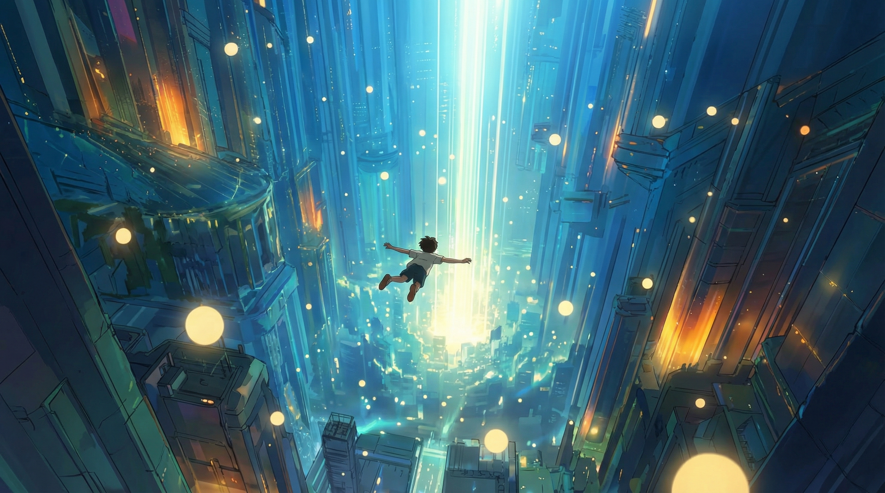
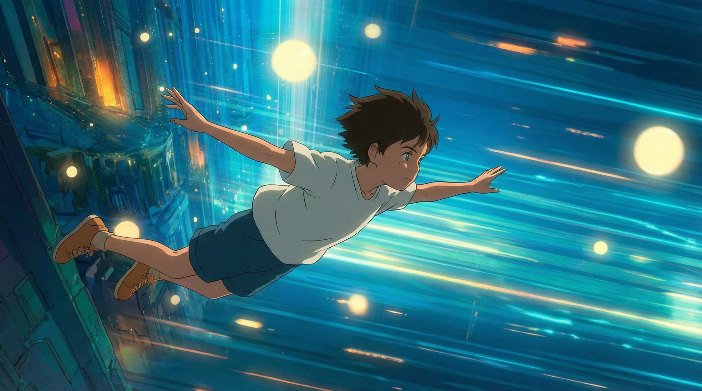
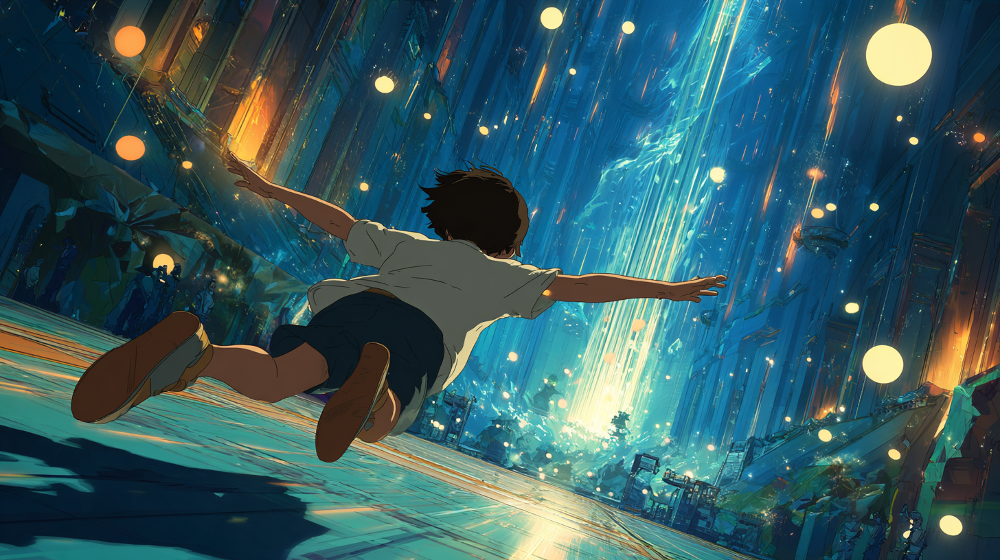

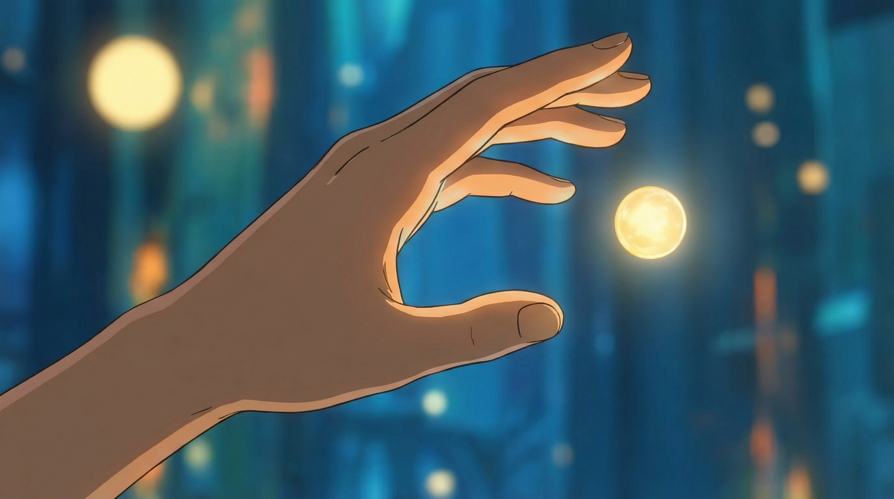
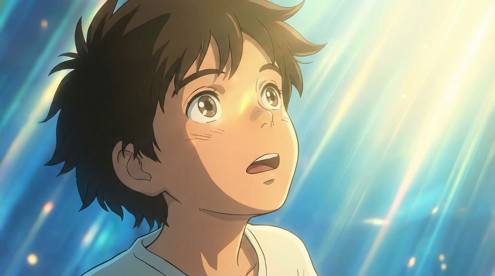
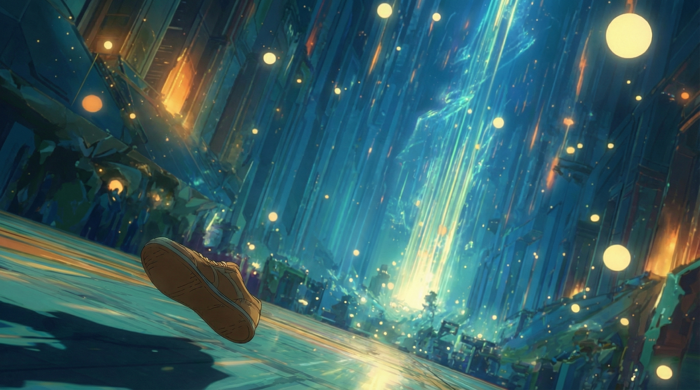
Rendered in a delicate 2D fantasy style blending Studio Ghibli and Makoto Shinkai, the video depicts a boy falling through a cyan futuristic vertical city who touches a golden orb and is instantly engulfed by an explosive burst of light.
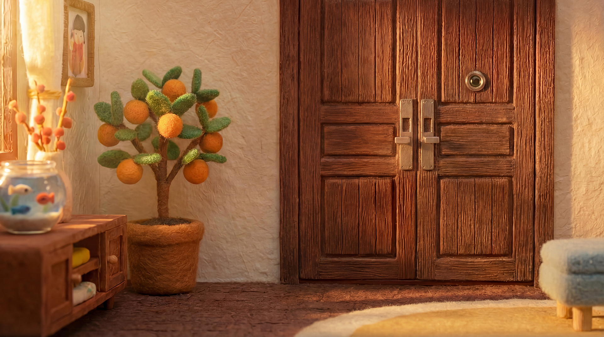
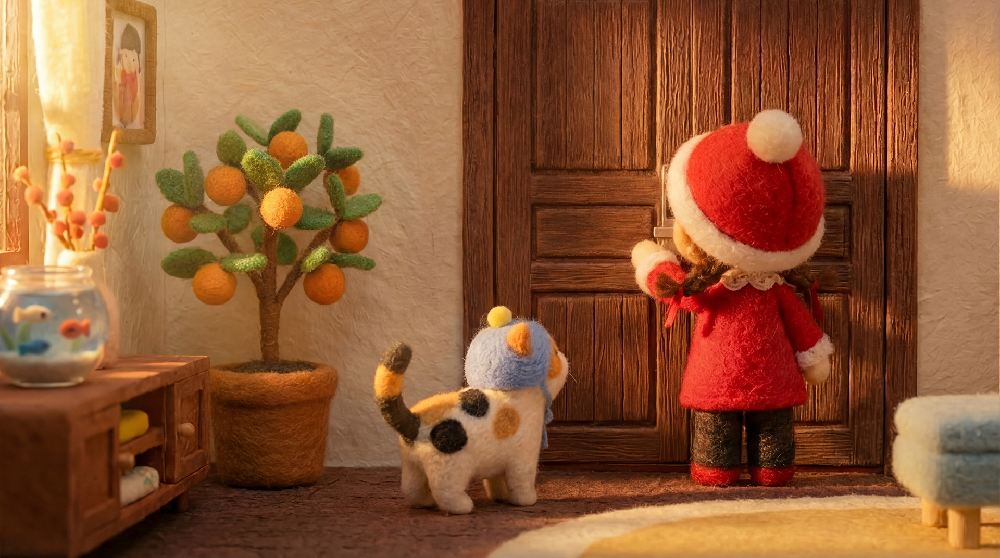
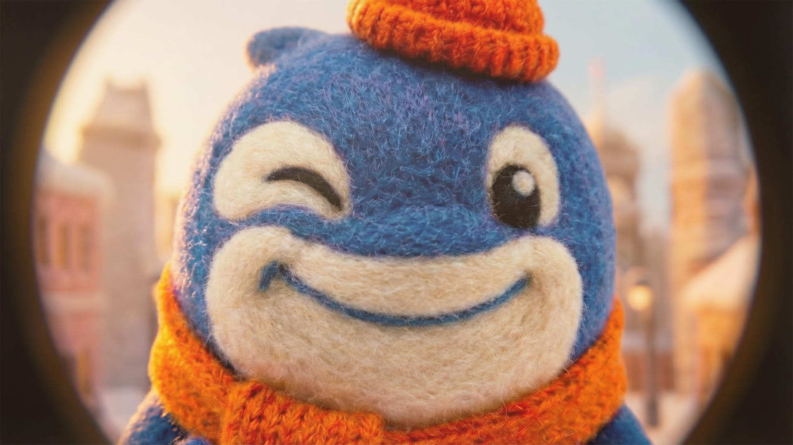
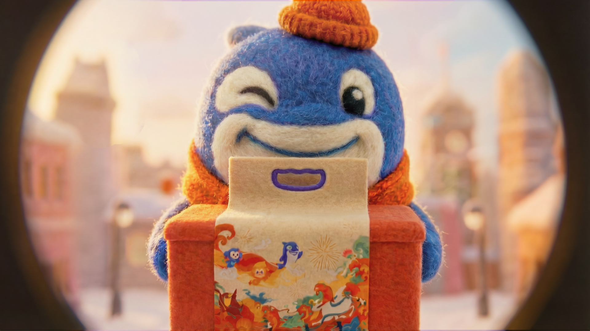
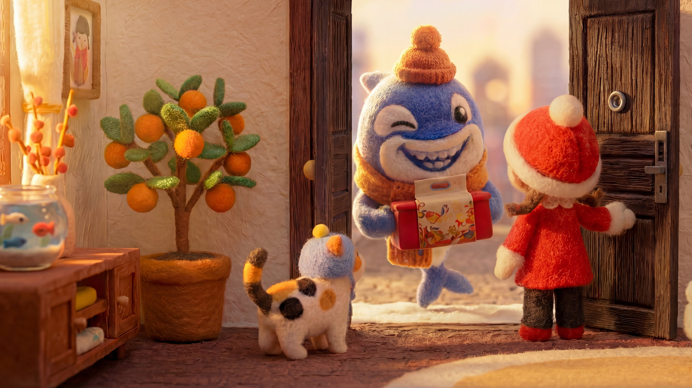

This stop-motion-inspired cinematic sequence depicts a heartwarming interaction between a red-hatted felt girl and a blue felt orca, progressing from a curious peep through a fisheye door viewer to the joyful exchange of a gift.
A young East Asian boy plays a first-person shooter game at home, moving from the living room to his bedroom while a female figure shifts from routine chores to silently observing him.
Pixar-style 3D animation, golden-hour outdoor scene: a hungry orange kitten hides in a tree, curiously spying on a house—first spotting pizza on a table through one window, then noticing a sleeping puppy through another.